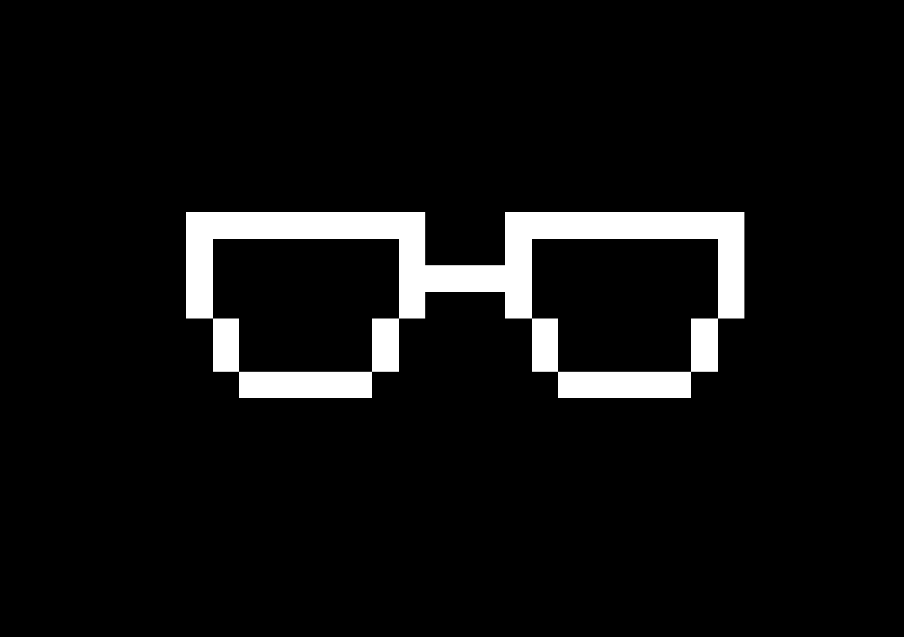

Olá, seja bem vindo ou simples blog escrito em html por mim, Kleber

Um desenho de pixel art que fiz para usar em redes sociais
Acredito que uma vida cultivando o melhoramento próprio é uma vida bem vivida, por causa disso sempre procuro aprofundar meus conhecimentos
minhas abilidades e modo de pensar em tudo que me interessa, que acaba por ser muitos topicos. Mas, dos que me importo de mencionar, posso notar: